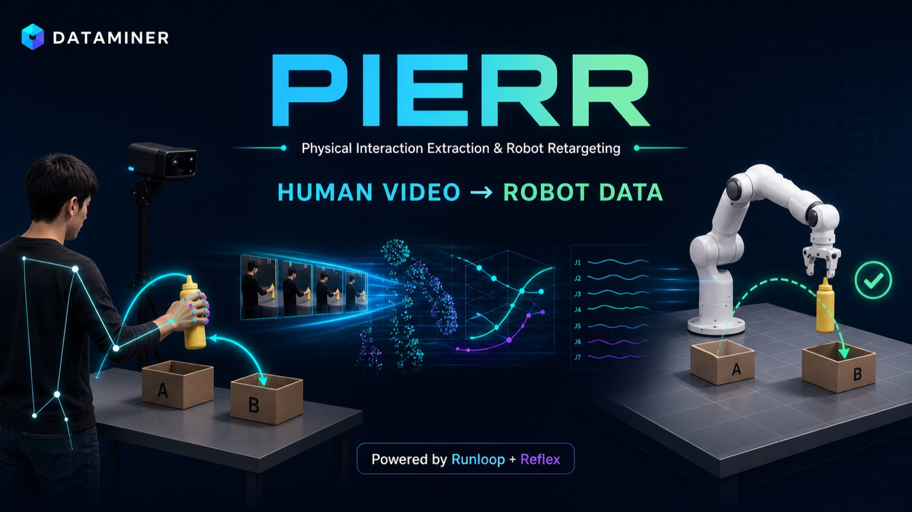
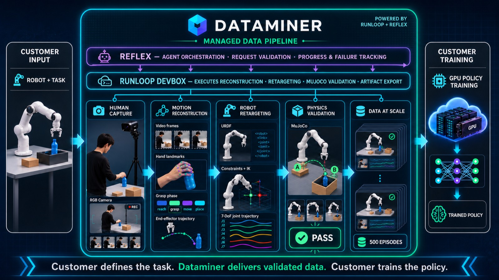
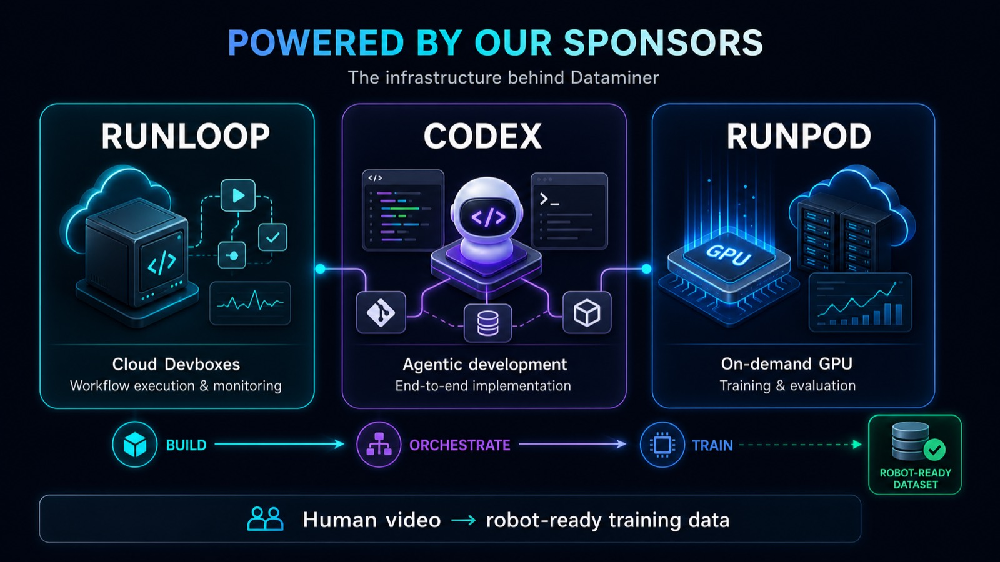

01 · Problem
로봇 학습 데이터는
비싸고, 느리고, 로봇마다 다릅니다.
01
Teleoperation
숙련 작업자가 실제 로봇을 반복 조종해야 합니다.
02
Robot-specific
같은 태스크도 로봇 관절과 제약이 달라 재사용이 어렵습니다.
03
Scale
수백·수천 episode를 모으는 순간 비용이 폭증합니다.
02 · Solution
사람은 카메라 앞에서 작업하고,
우리는 로봇 데이터로 컴파일합니다.
3인칭
RGB 영상
RGB 영상
→
손 landmark
+ grasp phase
+ grasp phase
→
Object-centric
EE trajectory
EE trajectory
→
Franka IK
+ MuJoCo 검증
+ MuJoCo 검증
입력
고객의 로봇 사양, URDF/제약, 태스크 정의, 촬영 영상
출력
7-DoF joint target, gripper, provenance, validation, rollout MP4

03 · Demo 1 · Verified on Runloop
공개 검증 영상 → Franka 물리 성공
TASK SUCCESS
91.2%손 검출률
91 / 91IK valid frames
0금지 충돌
0.38 mm최종 목표 거리
04 · Demo 2 · Data Engine
공개 RGB 영상 3개를 요청해, 검증된 seed 2개를
500개 물리 검증 episode로 확장했습니다.
DexYCB subject-07
3개 요청 · 2개 검증/선택, 고정 카메라 자동 선택
RGB
Human segment
MediaPipe 기반 approach · grasp · lift
Provenance
Generated segment
MuJoCo 기반 carry · place · release
Hybrid
Physics generation
시작/목표 위치를 바꾸고 성공한 episode만 저장
500 / 500
DexYCB GT pose/depth는 trajectory 입력에 사용하지 않습니다. CC BY-NC 4.0이므로 현재 데모는 연구·비상업 용도입니다.
05 · Learning
Phase-conditioned Behavior Cloning
31-D
7-phase one-hot · phase progress
Observation
robot state · object/target relative pose7-phase one-hot · phase progress
→
3 × 512
매 control step 재추론
MLP Policy
chunk = 1매 control step 재추론
→
8-D
+ gripper command
Action
7 absolute joint targets+ gripper command
최종 합격 기준: 학습과 분리된 20개 환경 중 10개 이상 성공. 미달 시 성공 영상만 골라 통과 처리하지 않습니다.
05B · Demo 2 · Held-out Rollout
최종 평가 12 / 20 성공 · 합격
TRIAL 00 · FAIL
TRIAL 01 · SUCCESS
500검증 episode
100,360학습 transition
65%선택 모델 validation
60%held-out 성공률
06 · Infrastructure
각 제품은 한 가지 역할만 맡습니다.
Runloop
Transform
고객별 Devbox
영상 → 데이터
→
RunPod
Train
DexYCB 12GB 처리
GPU 학습 · 평가
→
Reflex
Operate
지시 · 로그 · 실패 원인
artifact 요약
RunPod는 RTX 4090 → A40 → L4 순서로 요청하고, 성공·실패 모두 `finally`에서 Pod를 삭제합니다.
07 · Build Status
현재 어디까지 실제로 됐는가
✓
Runloop 실제 E2E
완료91프레임 변환 · MuJoCo 병 이동 · artifact 회수
✓
DexYCB + RunPod runner
82 TESTSsubject-07 12GB 다운로드 · RGB seed 2개 · Pod 자동 삭제 계약
✓
RunPod 데이터 생성
완료물리 검증 episode 500 / 500 · 총 100,360 step
✓
RunPod 최종 학습 / 20회 평가
60%RTX 4090 · 300 epochs · held-out 12 / 20 성공
08 · Business Model
로봇 회사가 태스크를 주면,
우리는 학습 가능한 데이터를 납품합니다.
01
Customer spec
로봇 사양
태스크 · 제약 · 성공 조건
→
02
Managed capture
작업자 고용
카메라 세팅 · 촬영 QA
→
03
Data delivery
trajectory · provenance
validation · policy baseline
09 · Closing
“로봇을 직접 조종해서 데이터를 모으는 대신,
사람이 하는 일을 촬영하고
로봇 데이터로 컴파일한다.”
사람이 하는 일을 촬영하고
로봇 데이터로 컴파일한다.”
Human demonstrations at camera scale. Robot trajectories at simulation precision.
GitHub: codex/demo-runloop-reflexFranka mustard bottle A → B
